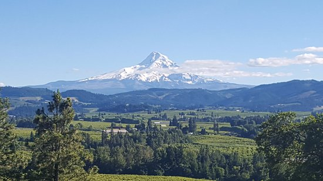
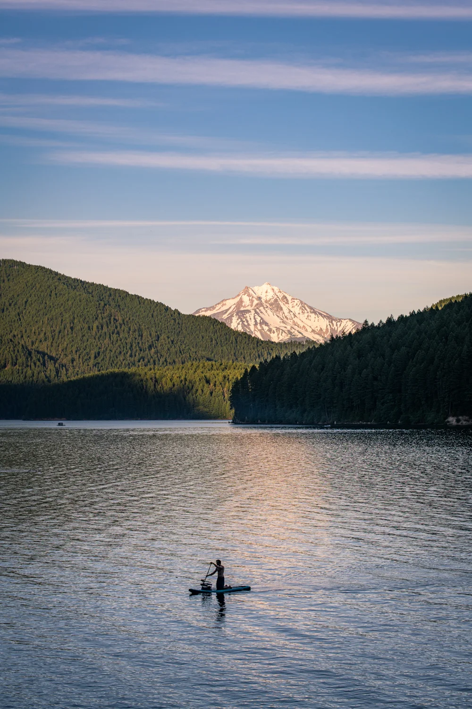
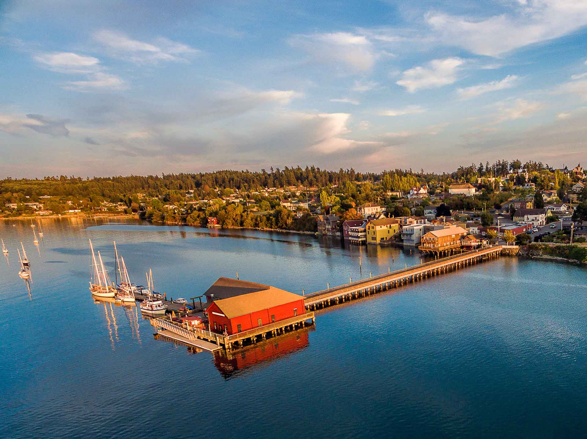

Drive time from Portland: 1 hour
Wildflowers in the Columbia River Gorge
Spring Skiing at Mount Hood Meadows
Panorama Point

Shop and Stroll Downtown
Drive time from Portland: 2 hours
Camp at Detroit Lake

Hike to Sahalie and Koosah Falls

Soak in Breitenbush Hot Springs
Drive time from Portland: 4 hours
Hike through the Hoh Rainforest
Summit Mount Storm King
Make a fire at Shi Shi Beach
Ski Hurricane Ridge
Drive time from Portland: 4 hours
Deception Pass State Park
Ebey's Landing State Park
South Widbey State Park
Wine Tasting
Visit Langley Town Center
Visit Coupeville

Drive time from Portland: 5 hours
Stop and walk at the McNary National Wildlife Refuge
Watch the sunset at Palouse Falls
Go to multiple wineries in Walla Walla
Swim, Kayak, or Bike at Bennington Lake
Spring Skiing at Bluewood Ski Area
Drive time from Portland: 6 hours
Scramble down to the best view of Natural Bridges

Hang out at Secret Beach for sunset
Stop at Arch Rock Viewpoint
Walk along Whaleshead Beach
Camp at Harris Beach State Park
Drive time from Portland: 6 hours
Backpack the Painted Canyon Loop in the Honeycombs Wilderness
Soak in Three Forks Hotsprings
Camp and explore Leslie Gulch
See the Pillars of Rome